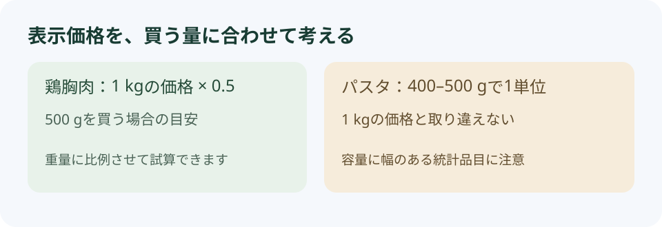

1. まずは「何の価格か」を確認しよう
このガイドで使うのは、ハンガリー中央統計局（KSH）の平均消費者価格をもとに、ハンガリー留学ラボの基本情報ページで掲載している16品目のデータです。全国の価格の目安として、留学前の買い物予算を考えるときに使えます。
この表で分かること
日常的な食料品の価格と単位を確認できます。特定のスーパーの販売価格、ブダペストだけの平均、日本との価格差を示す表ではありません。
たとえば「パン916 Ft」と書かれていても、それが1個なのか1 kgなのかで意味が変わります。価格と一緒に、容量・個数・食品の種類まで確認しましょう。
2. 食料品16品目の価格目安
以下は作成時に確認した2026年4月分の掲載データです。ページを開くと、基本情報ページと共通のデータを確認します。
| 品目 | 価格の単位 | 全国平均価格 |
|---|---|---|
| 牛乳（ESL・脂肪分2.8%） | 1 L | 386 Ft |
| 卵 | 10個 | 926 Ft |
| 鶏胸肉（フィレ） | 1 kg | 2,500 Ft |
| 卵入りスパゲッティ | 400–500 g | 609 Ft |
| 白パン | 1 kg | 916 Ft |
| トマト | 1 kg | 1,940 Ft |
| バナナ | 1 kg | 803 Ft |
| トラピスト系チーズ | 1 kg | 2,710 Ft |
| フルーツヨーグルト | 125–150 g | 154 Ft |
| 玉ねぎ（データ表記：red onions） | 1 kg | 336 Ft |
| じゃがいも（新じゃがを除く区分） | 1 kg | 355 Ft |
| きゅうり | 1 kg | 1,520 Ft |
| りんご | 1 kg | 570 Ft |
| ひまわり油 | 1 L | 854 Ft |
| 小麦粉 | 1 kg | 233 Ft |
| 米（データ表記：unpolished） | 1 kg | 712 Ft |
Ftはフォリントの表記です。通貨コードはHUF。実際の価格は店舗、地域、ブランド、時期、セールなどによって変わります。
食品の種類にも注意
- 牛乳はESL・脂肪分2.8%の区分です。すべての牛乳に同じ価格が当てはまるわけではありません。
- ヨーグルトはフルーツヨーグルト125–150 gの区分です。大容量のプレーンヨーグルトやサワークリームとは別の商品です。
- チーズはトラピスト系の区分です。モッツァレラなど別の種類とそのまま比較しないようにしましょう。
- 米の英語表記は「Husked rice, unpolished」です。日本の白米や日本米の販売価格を示すものではありません。
3. 1 kg・1 L・10個の違いを読む

1 kg当たりの価格なら、500 gの目安は半分、250 gの目安は4分の1です。1 L当たりの価格なら、500 mLの目安は半分です。ただし、小分けパックの販売価格が必ず重量に比例するわけではありません。
卵は10個、ヨーグルトは125–150 g、パスタは400–500 gが表の単位です。パスタは容量に幅があるので、厳密な1 kg当たりの比較では、実際の商品パッケージの重量を確認してください。
店頭で比べるときのコツ
商品の値札だけでなく、1 kg・1 L当たりの単価も確認すると、容量の違う商品を比べやすくなります。会員限定や複数購入の割引は、適用条件まで見てから選びましょう。
4. こんな買い物なら、合計はいくら？
牛乳、卵、主食、肉、野菜、果物を一緒に買った場合の計算例です。表の平均価格を購入量に合わせて足しています。特定の献立や日数分の食事、1週間の必要量を表すものではありません。
| 品目 | 買う量 | 試算額 |
|---|---|---|
| 合計 | — | |
パスタは400–500 gの統計単位を1単位として計算しています。調味料、飲料、外食、日用品などは含みません。各行は小数を丸めて表示し、合計は丸める前の数値から計算します。
円で考えたいときは
初期値の0.5円は計算例です。現在の為替レートではありません。利用する送金・決済サービスのレートに置き換えてください。
円換算の式は「フォリントの金額 × 1 Ft当たりの円」です。送金・決済手数料がかかる場合は、別途予算に含めましょう。
5. 月の食費は、自分の買い方から考える
16品目の価格を全部足しても、1か月の食費にはなりません。食べる量、自炊の回数、外食、飲み物、調味料などによって必要な予算が変わるためです。
- 自炊で買うものを挙げる。主食、肉・魚・卵、乳製品、野菜、果物、調味料などに分けてみましょう。
- 買う量を決める。1 kgの価格が載っている品目でも、実際に買う量が500 gなら、その量に合わせて計算します。
- 外食や表にないものを足す。大学の食堂、カフェ、飲料、日用品の支出も整理しましょう。
- 現地のレシートで調整する。渡航後に数週間分を記録すると、自分の食費を見積もりやすくなります。
この表には家賃、光熱費、交通費、通信費は含まれていません。留学全体の予算は、食費とそれ以外の生活費を分けて考えてください。
6. 買い物で出費を調整するポイント
- 同じ容量・種類で比べる。安い商品でも量が少ない場合があります。単価と食品の種類をそろえて比較しましょう。
- 使い切れる量を買う。大容量でも、食べきれずに捨てると節約になりません。シェアの冷蔵庫では収納場所も確認しましょう。
- その日の値札を確認する。全国平均より安い商品や高い商品があります。表の金額は、店頭の販売価格を保証するものではありません。
- 価格だけでなく自炊のしやすさも確認する。住居に調理器具、コンロ、冷蔵庫があるかで、無理なく続けられる買い方が変わります。
「ハンガリーなら何でも安い」と一括りにするより、普段よく買うものの値段と、自分が使う量を確認する方が、実際の生活に合った予算を作れます。
7. データの出典と更新について
このガイドと基本情報ページは同じprices.jsonを参照します。このファイルが更新されると、ページを開いた際に価格表・買い物例へ反映されます。KSHの公表からサイト掲載まで時間差があるため、必ず表に表示する統計対象月を確認してください。
作成時に確認したサイトの掲載データは2026年4月分、取得日は2026年5月18日でした。記事の作成日と価格の統計対象月は別です。データを読み込めない場合は、2026年4月分の保存データであることを明記して表示します。
現役生に、普段の買い物について聞いてみる
「どこで買っている？」「キッチンは使いやすい？」「実際の食費は？」など、留学先の生活を知りたい方は、その都市で暮らす現役生に相談できます。
現役生を見る